Using existing classes
Use set of object from shapes project to manually create a house object. Use existing Square, Circle and Triangle classes. Manually assemble component set to create and display initial design. Develop a new class RectangleBJ by refactoring Square class. Further refactor Circle and Triangle classes.
Copy the shapes project (folder) from the BlueJ chapter01 folder to your session03 folder.
The path to the copied shapes project should be as follows:
../workspaceBlueJ/labs/session03/shapes
This is the house we will construct (Figure 1):
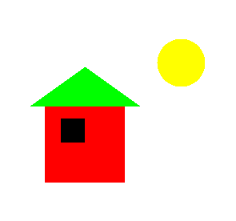
From Figure 1 it's evident we require two rectangle objects to represent the wall and window, a triangle object to represent the roof and a circle object to represent the sun.
We require methods to be available to resize, position and colour the various objects. Let's explore the availabe methods. Recall that you can do this be creating an object of each class on the object bench and then right clicking on the object.
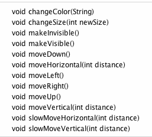
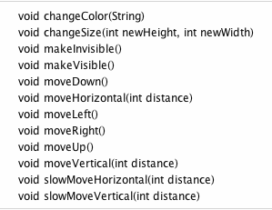
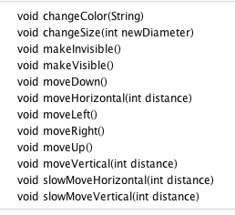
All necessary methods are available to create and manually assemble a picture of the house and sun albeit much trial and error will be required.
Let's begin.
Relaunch BlueJ and open the shapes project in your session03 folder.
Create and make visible a window object from the Square class.
Inspect the state of window. Notice the size, i.e. the length of each side, is 30 units. This is illustrated in Figure 5.
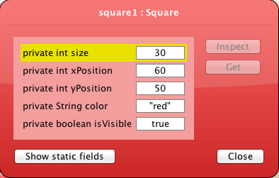
A comparison between Figure 1 and the window object just created suggests that the default square size is suitable for a window and that the wall dimension is approximately three times that of the window.
The triangular roof extends beyond the walls by about half the width of the window therefore the new triangle base width could be approximately four times the default square width.
As a first draft you could work with these dimensions, which are summarised as follows:
Window size : 30 which is the default value
Wall size : 90
Triangle base : 120
Circle diameter : 30
Figure 6 illustrates the necessary objects that you should now create on the object bench.
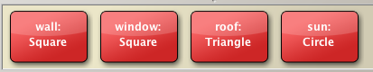
Make these four objects visible. See Figure 7. Only three appear because the two rectangle objects are similar.
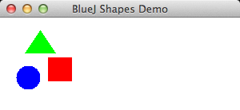
The Sun:
Change colour to yellow
Change size to 50
Move it right 150
Experiment with changes to the position and dimensions of the house components until you are satisfied with the result which should reasonably match that illustrated in Figure 1.
When you are satisfied with the picture you have created, inspect each object and note down its state.
You will require this data to recreate the picture once you have designed a Tree class and wish to introduce a tree object.
You will also require the data when you are designing a Picture class later in this lab.
Study the picture of the tree in Figure 1 below:
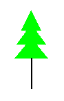
The upper part of the tree can be created from triangles.
We,however, require a new class to create the main stem or trunk of the tree.
A rectangle class will suffice and we will create this by refactoring the Square class as follows.
We can create a RectangleBJ class by modifying the Square class.
In BlueJ : session03 window you should see Circle, Square and Triangle class diagrams.
Create a new class RectangleBJ, open the source code in the editor and delete the contents.
Open Square source code, select, copy and paste into the RectangeleBJ class.
Alternatively, in Finder (Mac), Explorer (Windows) or similarly in other OSs, save the file Square.java as RectangleBJ.java.
We will refactor the Square class code that should now reside in the new class RectangleBJ.
The first modification that you should make is to replace the class name Square with RectangleBJ anywhere it exists in the source code.
The word square occurs throughout the source: replact it with the word rectangle.
Now, examine the method private void draw(). Notice that a new Rectangle object is created here and that two actual parameters are size, the length of the sides of the Rectangle object. Note: this Rectangle class is a different class to the RectangleBJ class that we are writing.
Rectangle(xPosition, yPosition, size, size)
Rectangle(xPosition, yPosition, xSideLength, ySideLength)
We are discarding the size field and replacing it with two new fields, xSideLength and ySideLength representing the length and height (or breadth) respectively of the rectangle.
Delete the field private int size and replace it with
private int xSideLength;
private int ySideLength;
Now refactor the constructor. Here is the origin Square constructor:
public Square()
{
size = 30;
xPosition = 60;
yPosition = 50;
color = "red";
isVisible = false;
}
Delete size and replace with
xSideLength = 60;
ySideLength = 30;
The signature of the constructor also requires changing. Here is the original Square constructor
public Square()
Fixed (default) values are assigned to the fields within this constructor. However we would like to have control over setting these values at instantiation, therefore we will use the following signature:
RectangleBJ(int xSideLen, int ySideLen, int xPos, int yPos,String colour)
In addition to specifying the size of the rectangle at instantiation, the position and colour of the rectangle will also be specified.
The refactored (overloaded) constructor is, therefore,
public RectangleBJ(int xSideLen, int ySideLen, int xPos, int yPos,String colour)
{
setState(xSideLen, ySideLen, xPos, yPos,colour);
}
Notice that a new method setState is invoked within the constructor. This is easily defined:
public void setState(int xSideLength, int ySideLength, int xPosition, int yPosition,String color)
{
this.xSideLength = xSideLength;
this.ySideLength = ySideLength;
this.xPosition = xPosition;
this.yPosition = yPosition;
this.color = color;
isVisible = true;
}
You may well ask why write a separate method to define the object state.
Later, following instantiation, we may require to relocate the rectangle. This can be achieved by writing a method called, for example, moveTo to which we give as parameters the new position (x,y coordinates). Here is a suitable method.
public void moveTo(int x, int y)
{
xPosition = x;
yPosition = y;
}
It's also necessary to refactor the changeSize method. Here is the original method:
public void changeSize(int size)
{
erase();
this.size = size;
draw();
}
It's easily observable what needs to be done: change the signature and replace size with the new fields. Here's the refactored code:
public void changeSize(int xSideLength, int ySideLength)
{
erase();
this.xSideLength = xSideLength;
this.ySideLength = ySideLength;
draw();
}
No other changes are necessary. To summarise, we have:
Perform some simple tests of the new class:
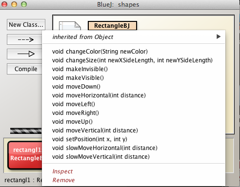
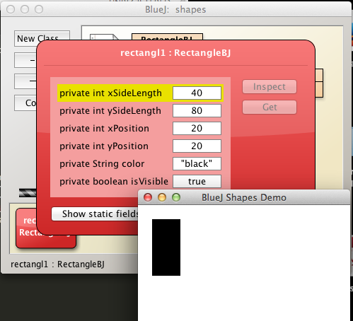
In your opinion, why did we not choose the name Rectangle for the new class?
Here is the complete refactored class.
As an exercise at the end of this lab you will be invited to comment this class and generate documentation.
import java.awt.*;
public class RectangleBJ
{
private int xSideLength;
private int ySideLength;
private int xPosition;
private int yPosition;
private String color;
private boolean isVisible;
public RectangleBJ()
{
xSideLength = 60;
ySideLength = 30;
xPosition = 60;
yPosition = 50;
color = "red";
isVisible = false;
}
public RectangleBJ(int xSideLength, int ySideLength, int xPosition, int yPosition, String color)
{
setState(xSideLength, ySideLength, xPosition, yPosition, color);
}
public void setState(int xSideLength, int ySideLength, int xPos, int yPosition, String color)
{
this.xSideLength = xSideLength;
this.ySideLength = ySideLength;
this.xPosition = xPosition;
this.yPosition = yPosition;
this.color = color;
isVisible = true;
}
public void makeVisible()
{
isVisible = true;
draw();
}
public void makeInvisible()
{
erase();
isVisible = false;
}
public void moveTo(int x, int y)
{
xPosition = x;
yPosition = y;
}
public void moveRight()
{
moveHorizontal(20);
}
public void moveLeft()
{
moveHorizontal(-20);
}
public void moveUp()
{
moveVertical(-20);
}
public void moveDown()
{
moveVertical(20);
}
public void moveHorizontal(int distance)
{
erase();
xPosition += distance;
draw();
}
public void moveVertical(int distance)
{
erase();
yPosition += distance;
draw();
}
public void slowMoveHorizontal(int distance)
{
int delta;
if(distance < 0)
{
delta = -1;
distance = -distance;
}
else
{
delta = 1;
}
for(int i = 0; i < distance; i++)
{
xPosition += delta;
draw();
}
}
public void slowMoveVertical(int distance)
{
int delta;
if(distance < 0)
{
delta = -1;
distance = -distance;
}
else
{
delta = 1;
}
for(int i = 0; i < distance; i++)
{
yPosition += delta;
draw();
}
}
public void changeSize(int xSideLength, int ySideLength)
{
if(xSideLength > 0 && ySideLength > 0)
{
erase();
this.xSideLength = xSideLength;
this.ySideLength = ySideLength;
draw();
}
else
{
System.out.println("Enter positive dimensions");
}
}
public void changeColor(String color)
{
this.color = color;
draw();
}
private void draw()
{
if(isVisible) {
Canvas canvas = Canvas.getCanvas();
canvas.draw(this, color,
new Rectangle(xPosition, yPosition, xSideLength, ySideLength));
canvas.wait(10);
}
}
private void erase()
{
if(isVisible) {
Canvas canvas = Canvas.getCanvas();
canvas.erase(this);
}
}
}
Now that we have a class to create rectangles we can proceed to manually assemble a tree.
Create a set of tree objects as illustrated in Figure 1.
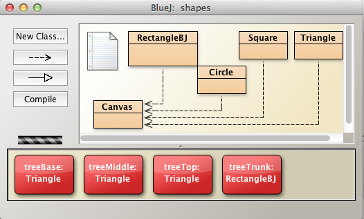
Make a first approximation at creating a suitable tree trunk object by instantiating a RectangleBJ object with the attributes illustated in Figure 2.
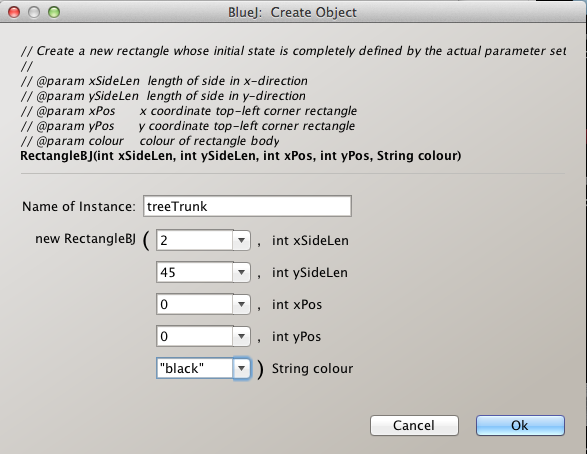
Invoke the tree trunk object's makeVisible method. The object will be rendered in the top left corner of the display window.
Now create the remaining tree component objects: three triangles using the only constructor available - the default constructor.
Display all objects.
Manually move the objects into position using suitable methods such as moveDown, moveLeft and so on.
Vary the triangle base widths to create a suitable appearance.
The result should be somewhat similar to that shown in Figure 3.
Now, using the data saved earlier when you created the house, manually recreate the complete picture. See Figure 4.
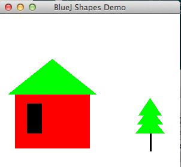
We have added a method moveTo(int,int) to the RectangleBJ class.
This method allows us to move objects of this class to a precise location of our choosing.
Let's add a similar method to each of Triangle and Circle classes now as this method will prove extremely useful during the next steps of the lab as we create Tree, House and Picture classes and their objects.
In the BlueJ editor, place cursor on the Triangle graphic, right click and select Open Editor.
Add the method moveTo illustrated in Figure 1.
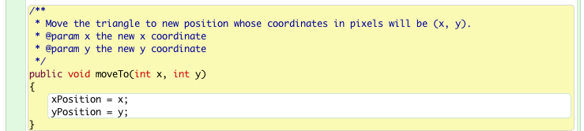
Refactor the constructor and add a setState method in a similar manner as in the RectangleBJ class. Here is the refactored code, which you should add to Triangle class:
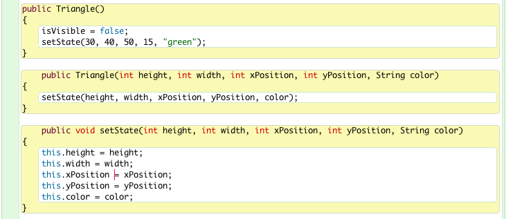
Repeating the procedure above, add a method moveTo to the Circle class (Figure 3).
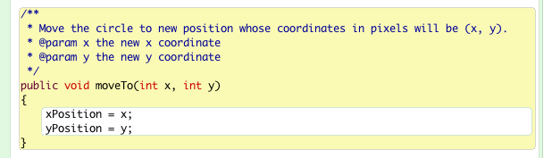
As with Triangle and RectangleBJ, create an overloaded constructor and accompanying setState method.
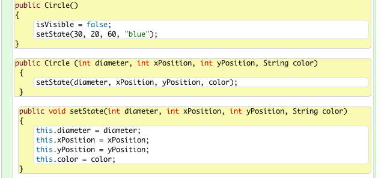
We have seen that a house object may be assembled from a triangle and two rectangles.
Let's now capture this behaviour in a class called House.
The advantage in doing so will become obvious when the class has been completed and its methods' behaviours demonstrated.
Place the cursor in the IDE window, still in the BlueJ shapes project in session03 folder, right click and select New Class (Figure 1).
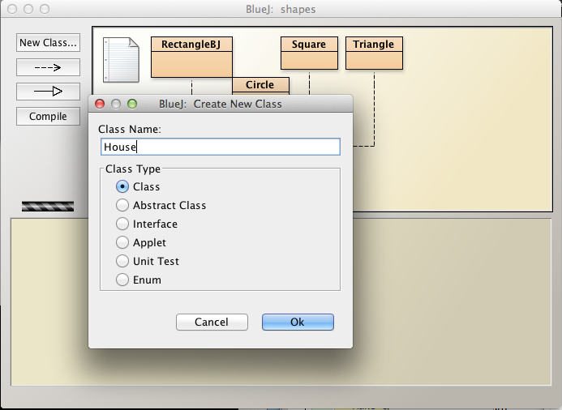
A rectangle (class diagram) representing the new House class should appear in the BlueJ IDE window (Figure 2).
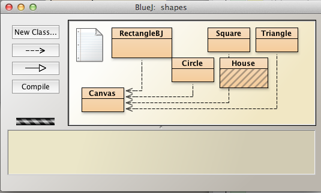
Click on this House representation in the IDE, right click and open the editor.
This will launch the House class skeleton source code file (Figure 3).
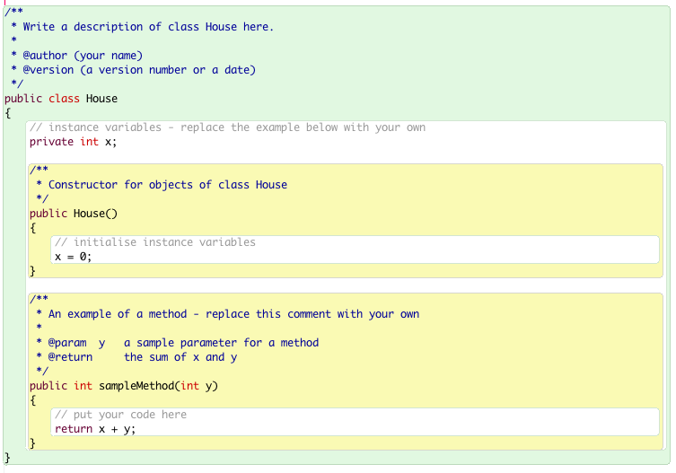
Delete all except the following so that we begin with just the outer class wrapper.
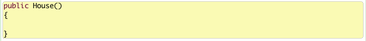
Check that the above compiles.
Let's now design the House class.
It will have the following fields:
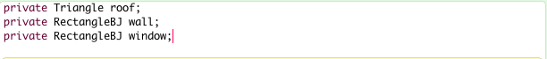
We could have used the Square class for the wall and window but since a square is a particular instance of a rectangle, using the rectangle is more general and thus gives us more flexibility.
Next we will add a default constructor, invoke private methods to create and initialize the fields and implement these methods with data:
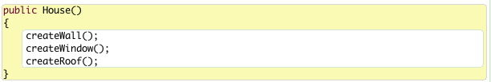
Here are the private creation methods:
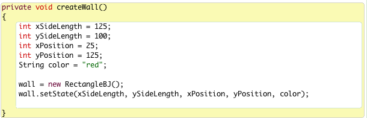
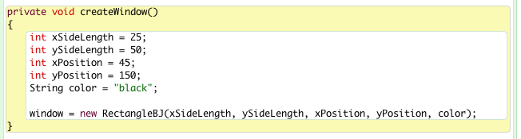
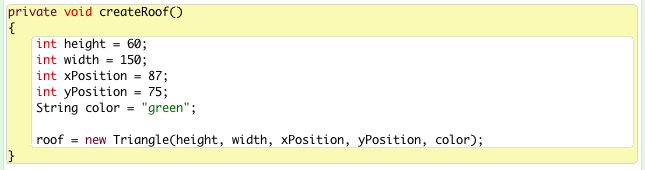
Let's subject the House class to some rudimentary tests:
Here's the source: add it to the class, compile and test.
public void display(boolean show)
{
if(show)
{
roof.makeVisible();
wall.makeVisible();
window.makeVisible();
}
else
{
roof.makeInvisible();
wall.makeInvisible();
window.makeInvisible();
}
}
Here is what's created using the default coordinates that we've provided.
You may be happy with this.
On the other hand, you may wish to make some architectural changes. (Figure 1).
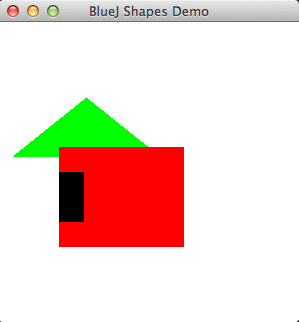
Here is the complete source code for the House class (file House.java):
public class House
{
private Triangle roof;
private RectangleBJ wall;
private RectangleBJ window;
public House()
{
createWall("red");
createWindow();
createRoof();
}
public House(String color)
{
createWall(color);
createWindow();
createRoof();
}
private void createWall(String color)
{
int xSideLength = 125;
int ySideLength = 100;
int xPosition = 25;
int yPosition = 125;
wall = new RectangleBJ(xSideLength, ySideLength, xPosition, yPosition, color);
}
private void createWindow()
{
int xSideLength = 25;
int ySideLength = 50;
int xPosition = 45;
int yPosition = 150;
String color = "black";
window = new RectangleBJ(xSideLength, ySideLength, xPosition, yPosition, color);
}
private void createRoof()
{
int height = 60;
int width = 150;
int xPosition = 87;
int yPosition = 75;
String color = "green";
roof = new Triangle(height, width, xPosition, yPosition, color);
}
public void display(boolean show)
{
if(show)
{
roof.makeVisible();
wall.makeVisible();
window.makeVisible();
}
else
{
roof.makeInvisible();
wall.makeInvisible();
window.makeInvisible();
}
}
}